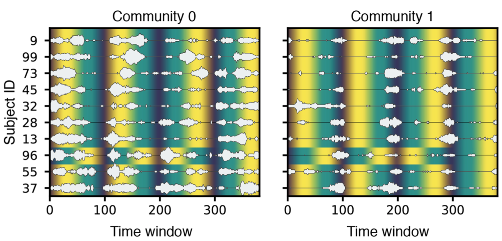

A while back I published a paper on community detection in temporal networks, and showed that it was possible to detect social gatherings on short timescales. Initially we thought it would be useful to use this method to track social dynamics of people in organizations or animals in the wild with this method; but when we took it to conferences, we noted that people from neuroscience seemed very interested.

So we got hold of some brain data! Specifically, fMRI measurements on subjects undertaking working memory tasks. We then partitioned the brain into a number of independent components and built a time-dependent correlation network of these components, and ran our method for community detection on this network. And TADA! It works, first a beautiful "attention-community" pops out, which activates only during task performance, and second, we get another "idle-community" network that only actiates when the subject is doing nothing. When looking at the communities that activate in it, the second community has strong resemblance to something called the default mode network.